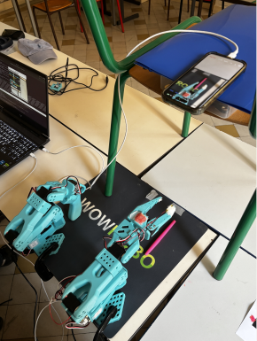
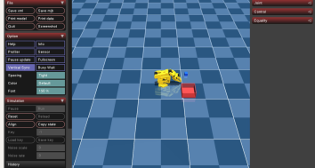
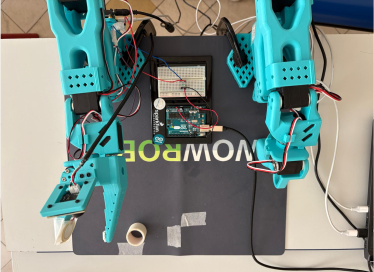
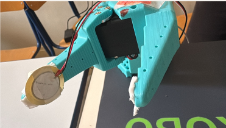
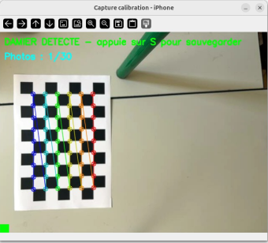
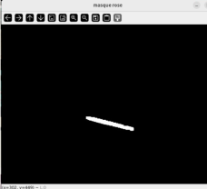
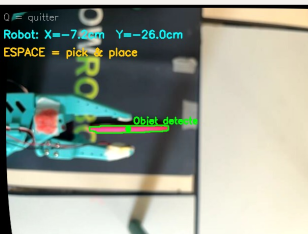

MS Mechanical Engineering student at Stanford University · Double degree with Arts et Métiers Institute of Technology
Teaching a robot arm to pick and place, and to feel what it grabs
Arts et Métiers · 2025–2026 · 60 hrs · Team project on the SO-101 arm (LeRobot, Hugging Face)
With a team of six Arts et Métiers students, we worked on a low-cost 6-axis robot arm, the SO-101, to teach it a pick-and-place task. The project started during the Hugging Face × AMD Robotics Hackathon 2025 and continued as a school project. Beyond moving the object, the idea was that the robot should know what it is holding, by sensing how its gripper closes on the object.

The setup: leader arm (teleoperation), follower arm and an external camera above the table
The arm works as a leader/follower pair: a human moves the leader arm and the follower copies it. The project was split into several parts: imitation learning (recording human demonstrations and training an ACT policy), a MuJoCo digital twin to prepare the demonstrations without risking the real robot, a reinforcement learning loop for the grip, and the sensors. My part was the sensing: position, contact (piezoelectric), force and vision.

The MuJoCo digital twin, driven in real time by the real leader arm (100 Hz)
Position of the arm
Each joint is driven by a Feetech STS3215 servo which gives back its angle. From these angles and the geometry of the robot (its URDF model), I computed the forward kinematics, that is the position of the gripper in the robot frame. This position is used everywhere else: to know where the gripper is when it closes, to calibrate the camera with respect to the robot, and to send the arm to the object found by the camera (inverse kinematics).
Feeling the object: piezoelectric and force sensors
To recognize the object, a piezoelectric sensor was fixed on the gripper and read by an Arduino at 200 Hz. When the jaw touches the object, the sensor gives a voltage peak: its height and its gradient (how fast it rises) depend on how hard the object is. The Arduino detects the contact, keeps the peak and sends these two values to the computer.

Arduino and piezo sensor wiring

Piezo sensor mounted on the gripper jaw
The grasp is done in two steps: the gripper first closes slowly and gently to "touch" the object, then the peak and the gradient are used to choose how tightly to close. This choice is learned with Q-learning on four objects (a plastic cup, a cardboard box, a wooden block and a metal block): a weak and slow peak means a soft object that must not be crushed, a strong and fast one means a rigid object that needs a firm grip. After only 20 trials, every object already gave a distinct response.
The limit of the piezo is that it only measures the dynamics of the contact (the impact), not a force held over time. A soft and a rigid object can therefore give close values. That is why we also looked at force sensing, to measure the clamping force itself and not only the shock, which is the next step to make the object recognition more reliable.
Vision: where is the object?
An external camera above the table locates the object. I first calibrated the camera with a chessboard to correct its distortion (reprojection error below 1 pixel). Then a color detection in HSV space isolates the object and gives its position in centimeters.

Intrinsic calibration with a chessboard

HSV mask of the object on a dark background

Detected object and its position in cm
To give this position to the robot, the camera frame has to be linked to the robot frame: this is the hand-eye calibration. The robot moves to several known poses with a colored marker on the gripper, the camera detects it, and the forward kinematics gives where it really is, which gives the transformation between the two frames. The whole chain then works: detection, inverse kinematics, grasp.
The main limitation was the hand-eye error, 5.67 cm, because the calibration poses were too close to each other. Spreading them over the whole work area, and replacing the color detection by a learned detector (YOLO for example), would allow the robot to handle any object.
Putting it all together
Finally, an orchestrator links the parts: the camera watches the table, and when the target object is recognized, the pick and place is launched, either with the trained ACT policy or with the geometric inverse kinematics. The code of the project is available on GitHub.